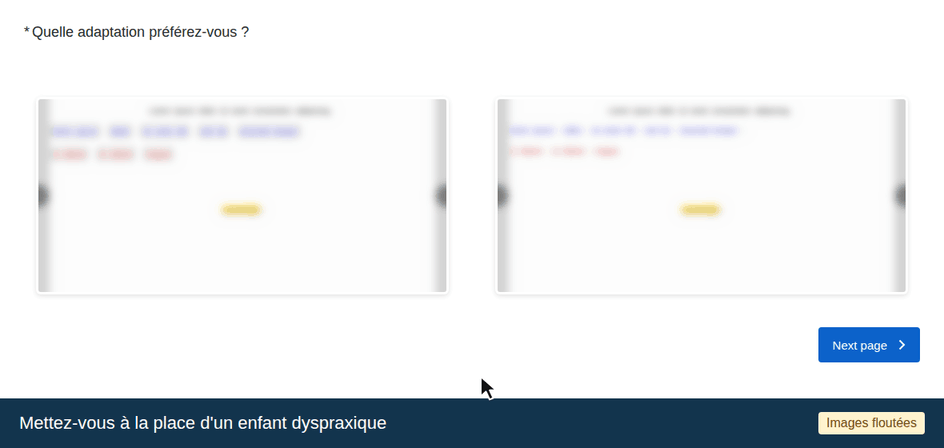

Comparaison d'adaptations
Pour terminer, vous verrez plusieurs paires de versions d'un même exercice. Toujours à la place d'un enfant dyspraxique, choisissez la plus efficace pour lui (aspects moteur et visuo-spatial).
Dans l'animation (images floutées), observez comment répondre : cliquez sur l'image choisie, elle s'encadre en bleu, puis passez à la paire suivante.
Une réponse par paire ; il n'y a pas de bonne ou de mauvaise réponse.
